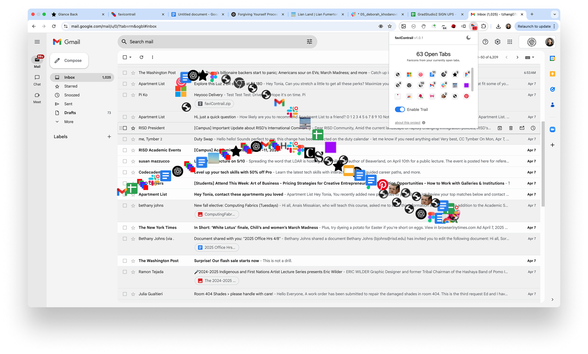

FaviContrail is currently in the testing phase and not yet available on the Chrome Web Store. In the meantime, you can download the extension as a ZIP file using the link above.
Download from Google DriveTo install FaviContrail:
1. Download the ZIP file with the link above and unzip it.
2. Open Chrome and go to chrome://extensions/
3. Turn on “Developer mode” (toggle button at the top right)
5. Click the “Load unpacked” button
6. Select the folder you just unzipped and load.
8. Now you can go to any browser tab.
In the extension menu bar, you can find FaviContrail and Pin it to be visible at all times.
9. If you wish to remove the extension, just go to chrome://extensions/ again, find FaviContrail and click “remove”.
Besides making your messy browser even more messy... :)
Think about this: tabs don’t just hold content. They are signifiers of places, containers of ideas, intentions, reminders, and questions. However, at a certain number they loose their purpose.
FaviContrail tells you how many open tabs you currently have. However, beyond being a tool, it is a small disruption. It is meant to make you look at your behavior. Why keep it all open? What are you afraid to lose?
• The extension icon shows how many tabs you have open.
• Favicons follow your cursor like a trail.
• You can turn the trail on or off using the popup.
• There are more features — like dark mode and trail clearing — in the settings.
